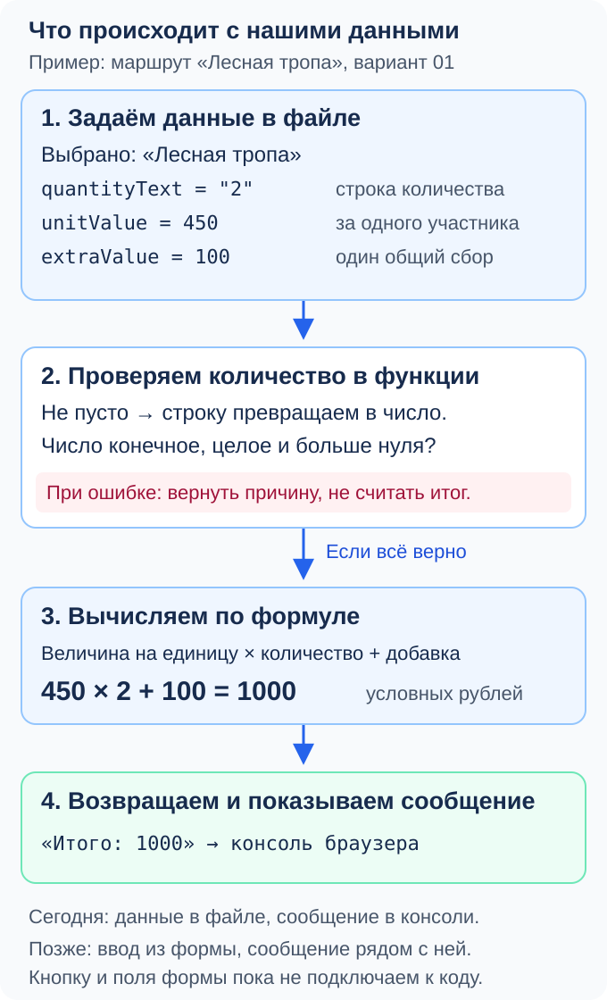
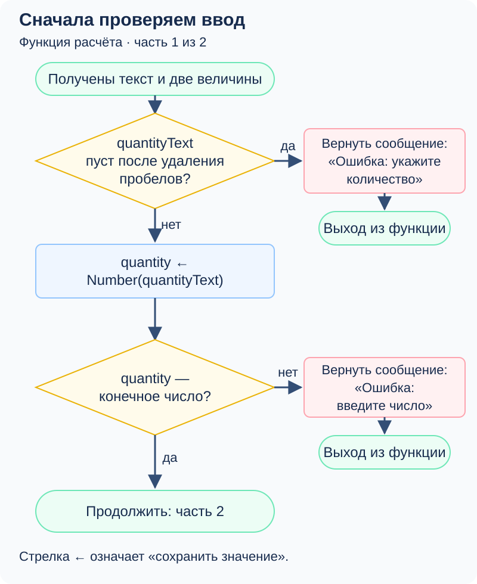
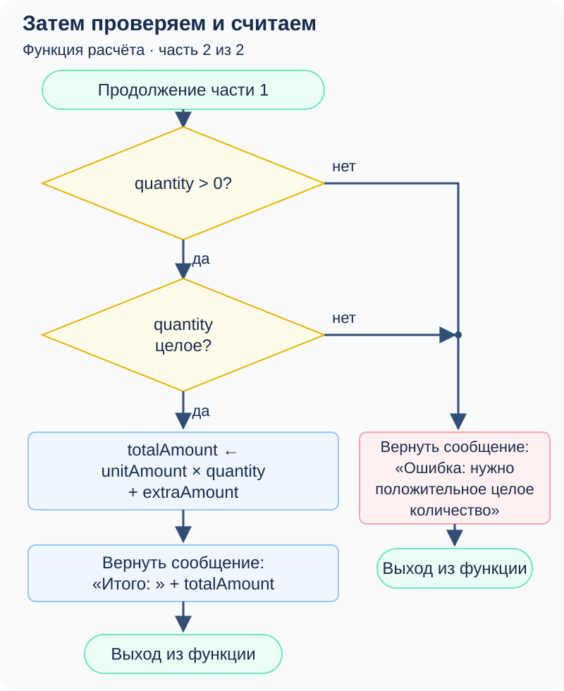

Условия и функции: проверка данных и вычисление результата
Соберём расчёт своего приложения, который не принимает неверное количество. Продолжайте VariantNN-web и данные своего варианта пары 19. Учебный пример — вариант 00.
Рабочий ритм: изменить → сохранить → обновить страницу → проверить.
1. Какой результат нужен пользователю приложения
Пользователь выбирает позицию и задаёт количество. Нужен итог либо понятная причина отказа. Весь разбор ведём на варианте 00 — «Учебный набор»: один набор стоит 150 условных рублей, одна доставка всего заказа — 50. Для двух наборов итог: 150 × 2 + 50 = 350. В своей работе используйте смысл величин, числа и единицы своего листа пары 19.

Откройте свою форму. Найдите поле количества и выбор позиции. Сегодня их изображают данные в файле, а сообщение появляется в консоли. Чтение формы и обработка кнопки будут позже.
2. Подготовьте файл и свои данные
- Рядом со старым
script.jsсоздайтеconditions.js; старый файл сохраните. - В
index.htmlзамените имя подключённого файла наconditions.js. Оставьте одно подключение текущей программы. - Напишите
console.log("Расчёт моего приложения");. Сохраните, откройте главную →F12→ Консоль, обновите страницу. Увидели сообщение — продолжайте. - Перенесите из пары 19 только исходные данные, без прежней формулы и вывода.
| Переменная JavaScript | Смысл величины |
|---|---|
quantityText |
текст количества — строка в кавычках |
unitValue |
величина на единицу — число |
extraValue |
общая добавка — число, учитывается один раз |
itemName |
название выбранной позиции |
isTraining |
признак учебных данных; в формулу не входит |
Сделайте: выведите название, количество и обе числовые величины. Комментариями // подпишите, что именно считается в вашем приложении. Флажки, пожелания и ползунок пока в расчёте не участвуют.
Проверьте: typeof quantityText даёт string, typeof unitValue — number. Числа записаны без единиц измерения и кавычек.
3. Функция получает данные и отдаёт сообщение
Добавьте после исходных данных каркас:
function getResult(quantityText, unitAmount, extraAmount) {
return "Расчёт пока не собран";
}
Три имени в скобках — параметры, то есть полученные значения внутри функции. При вызове передайте по порядку: свою строку количества, unitValue, extraValue. Конкретные переданные значения называются аргументами.
Сделайте: ниже функции вызовите её, сохраните возвращённое значение в const resultMessage, затем выведите эту переменную. Ожидается текст заглушки. return отдаёт значение и завершает вызов; для вывода нужен отдельный console.log(...).
Замените заглушку тремя действиями:
| Действие | Опора для записи JavaScript |
|---|---|
| quantity = Number(quantityText) | const quantity = Number(quantityText); |
| totalAmount = unitAmount × quantity + extraAmount | Соберите формулу из параметров и сохраните в totalAmount |
| Вернуть сообщение с итогом | Форма команды: return "Подпись: " + value; — подставьте "Итого: " и свою переменную |
Проверьте: исходное количество даёт итог пары 19. Увеличьте количество на 1, предскажите и проверьте новый итог, верните исходное. Выведите рядом смысл результата и единицу своего варианта. Внутреннюю totalAmount снаружи не используйте — там есть возвращённое сообщение.
Теперь передайте пустую строку: сумма всё равно вычисляется. Исправим этот дефект.
4. По блок-схеме проверяем исходный текст
Как читать схемы: овал — начало, продолжение или выход; прямоугольник — действие; ромб — вопрос с ветвями «да/нет». quantity = Number(quantityText) означает «сохранить результат преобразования в quantity». На схемах используются те же имена переменных и параметров, что в коде; = обозначает присваивание, как в JavaScript, а === — сравнение. Стрелки между блоками показывают порядок выполнения.

Где: внутри getResult, перед формулой.
- До
Number(...)добавьте проверку пустого текста:
if (quantityText.trim() === "") {
return "Ошибка: укажите количество";
}
trim() убирает крайние пробелы; === сравнивает, а = присваивает. Если условие if верно, выполняется блок в фигурных скобках. После return этот вызов дальше не идёт.
- После
Number(...)самостоятельно добавьте отказ, если результат не является конечным числом. Опоры:
| Запись | Значение |
|---|---|
Number.isFinite(quantity) |
true для конечного числа; false для NaN и бесконечности |
! перед проверкой |
Меняет ответ на противоположный |
return "Ошибка: введите число"; |
Завершает неверный вызов |
В ромбе задан положительный вопрос, а код отказа проверяет противоположное условие. Сопоставьте его с ветвью «нет».
Проверьте: "" и " " → «укажите количество»; "два" и "Infinity" → «введите число»; " 2 " → итог для двух единиц. Проследите пальцем, где каждый путь заканчивается.
5. По блок-схеме разрешаем расчёт

Где: после проверки конечного числа, до формулы. Допишите два отдельных блока if, как на предыдущем шаге.
| Когда отказать | Условие JavaScript | Что вернуть |
|---|---|---|
| Количество не больше нуля | quantity <= 0 |
"Ошибка: нужно положительное целое количество" |
| Количество не целое | !Number.isInteger(quantity) |
То же сообщение |
Number.isInteger(2) даёт true, а Number.isInteger(1.5) — false. После отказа else не нужен: return уже завершил вызов.
Проверьте: "0", "-1", "1.5" → ошибка; "1" → расчёт. Найдите на схемах путь каждого значения и соответствующие строки своей функции.
6. Сохраните испытания
Внизу файла оставьте исходные данные и одну функцию. Добавьте подписанные вызовы для всех строк таблицы. Меняется первый аргумент, свои две величины остаются прежними.
| Случай | Первый аргумент | Ожидаемый результат |
|---|---|---|
| Мой вариант | Строка из своего листа | Итог пары 19 |
| Одна единица | "1" |
Величина на единицу + добавка |
| Три единицы | "3" |
Тройная величина на единицу + добавка |
| Пустое поле | "" |
Укажите количество |
| Только пробелы | " " |
Укажите количество |
| Слово | "два" |
Введите число |
| Бесконечность | "Infinity" |
Введите число |
| Ноль | "0" |
Положительное целое количество |
| Отрицательное | "-1" |
Положительное целое количество |
| Дробное | "1.5" |
Положительное целое количество |
| Пробелы вокруг числа | " 2 " |
Итог для двух единиц |
Ожидаемые итоги трёх обычных вызовов посчитайте заранее и запишите комментариями. Ошибочные вызовы не должны содержать рассчитанной суммы.
Добавьте ещё две проверки на две единицы:
- Увеличьте только величину на единицу на 10 → итог больше на 20.
- Увеличьте только общую добавку на 10 → итог больше на 10.
Исходные константы не меняйте: передайте изменённые значения отдельными аргументами. Если разница неверна, проверьте, что формула использует параметры, а добавка прибавляется один раз.
Покажите результат
Покажите подключение файла, собственную функцию и все 13 подписанных испытаний. По выбранному преподавателем входу проведите путь на схемах, найдите этот путь в коде, предскажите результат и запустите. Назовите будущее поле ввода и место сообщения. Отдельный отчёт не нужен.
Если закончили раньше
Перенесите проверку пустого текста ниже проверки положительности. Предскажите результат для "", запустите, объясните изменение и восстановите порядок. Снова выполните испытания.
Затем самостоятельно напишите getQuantityMessage(quantityText): те же правила количества, но сообщение о допустимости без расчёта итога. Объясните, где такая функция пригодится форме; испытайте пустую строку, дробь и положительное целое число.
Если результат не совпал
| Симптом | Что проверить |
|---|---|
trim is not a function |
Первый аргумент — строка |
ReferenceError |
Имена и регистр; внутренние переменные не используются снаружи |
undefined вместо сообщения |
После вычисления есть return |
| Неверный ввод дошёл до формулы | Условие и направление ветви; проверка стоит до вычисления |
SyntaxError |
Скобки, кавычки, запятые между параметрами |